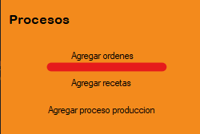
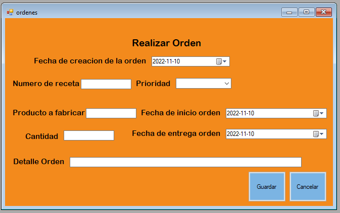

El proceso de "Agregar ordenes" tiene como objetivo registrar una nueva orden al sistema. Para ello debemos dirigirnos al menú de procesos y luego seleccionamos la opción "Agregar ordenes".
En la siguiente Figura podremos observar el Formulario que debemos llenar. Hay que tener en cuenta que a la hora de ingresar un valor en "Numero de receta" la receta tiene que existir, ademas que unicamente el campo "Detalle" puede ir vacio, el resto de campos tienen que ser llenados.
